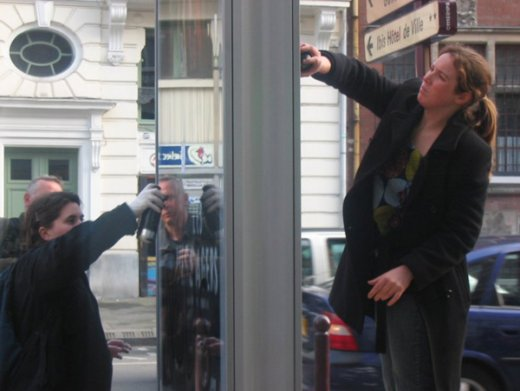

| |
Site dédié à la publication d'informations communiquées par le Collectif des déboulonneurs. En aucun cas ce site n'appelle à des actions illégales. | |
 |
||
|
Accueil du site > Lille > Vendredi 30 Mars 2007 - Compte rendu de la 6ème action du collectif des (...)
17h55 le rendez vous était fixé place Richebé à Lille en ce vendredi 30 mars 2007. Dans une atmosphère joyeuse et détendue, déboulonneurs, sympathisants se ressemblent petit à petit pour cette 6ème action non violente de désobéissance civile. Alessandro accueille chaleureusement les participants et interpelle les passants les invitant à soutenir cette action d’utilité publique. Il explique rapidement le déroulement de l’action, nos principales revendications et invite toutes et tous à parcourir la rue du Molinel pour un pèlerinage publicitaire fraîchement renouvelé. Laetitia et Sylvia, nos deux barbouilleuses, souriantes et bien décidées à dénoncer l’invasion publicitaire dans l’espace public, débutent leur dégradation légère de barbouillage. Des slogans tels que : « Pas besoin de créer des besoins », « Stop à la pub », « La pub vous fait dé-penser, stop », « Jetons les pubs maintenant ! », « Pub = pensée unique », « Pub à la poubelle » , « 50x70 », « 50x70 = affichage associatif et politique », « La pub pense pour nous », « La pub nuit à nos enfants » sont inscrits sur 5 panneaux publicitaires de type « sucettes » au format 1 mètres sur 2 mètres. L’ensemble des panneaux publicitaires appartient à la société CBS qui a récemment remporté le marché sur le mobilier urbain de la ville de Lille. Tout au long, Guillaume, l’animodérateur explique l’objectif de l’action en expliquant nos revendications principales à savoir : la refonte de la législation en matière d’affichage publicitaire : une stricte limitation de son implantation et une réduction de sa taille à 50 sur 70 centimètres. Les déboulonneurs et le public se déroulent en un long cortège d’une quarantaine de personnes s’arrêtant au gré des panneaux publicitaires envahissant les trottoirs et le paysage.

Guillaume informe les participants des différents délibérés des procès de Alès et de Paris et entreprend une lecture de soutien exprimé par José Bové sur l’action de désobéissance menée par l’ensemble des collectifs de déboulonneurs. A plusieurs reprises, nous reprenons en chœur et avec conviction « l’hymne » des déboulonneurs, la chanson « le barbouilleur » sur l’air du « déserteur » de Boris Vian. La police est absente tout au long de l’action qui s’est déroulée de 18h à 18h45. La police est présente pour des contrôles routiers mais semble nous ignorer complètement, malgré les explications fournies par notre contact police, Priscillia. De fait, il s’avère que ces policiers appellent leurs collègues pour qu’ils viennent interpeller les contrevenantes. 18H50, après une dernière chanson, de nombreux applaudissements, et le soutien des passants, la fin de l’action et la dispersion est annoncée. Cependant, le groupe repart uni. Dans les secondes qui suivent, 3 voitures de police et un camion de CRS nous rattrapent et encerclent l’ensemble du groupe. Alessandro et Priscillia exposent la démarche non-violente et assumée de l’action. Sylvia et Laetitia s’avancent ensuite vers les policiers assumant leurs revendications et sont emmenées par les policiers. Les contacts restent courtois mais l’interpellation est ferme. La police patiente quelques instants durant lesquels la chanson du barbouilleur est entonnée une énième fois pour encourager et féliciter nos deux courageuses barbouilleuses. La police est chaleureusement remerciée pour avoir effectué son travail et des applaudissements suivirent pendant que les voitures emmènent Laetitia et Sylvia au commissariat central de Lille. Il est 19H10. Collectivement, une vingtaine de personnes décide de patienter devant le commissariat. Environ 1H30 plus tard, Sylvia et Laetitia ont signée la déposition ressortent du commissariat. Elles ont passé beaucoup de temps à attendre, ensemble, dans une geôle sans porte, et environ 20 minutes pour faire la déposition, séparément, auprès du même officier. Les barbouilleuses ont accepté d’être convoquées à comparaître prochainement au tribunal. Après 6 actions, le collectif des déboulonneurs se réjouit du bon déroulement de l’action et d’une possible tribune à venir. |
|
Site utilisant SPIP - Hébergement Ouvaton
|